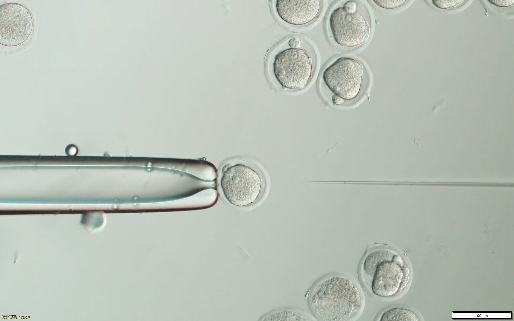
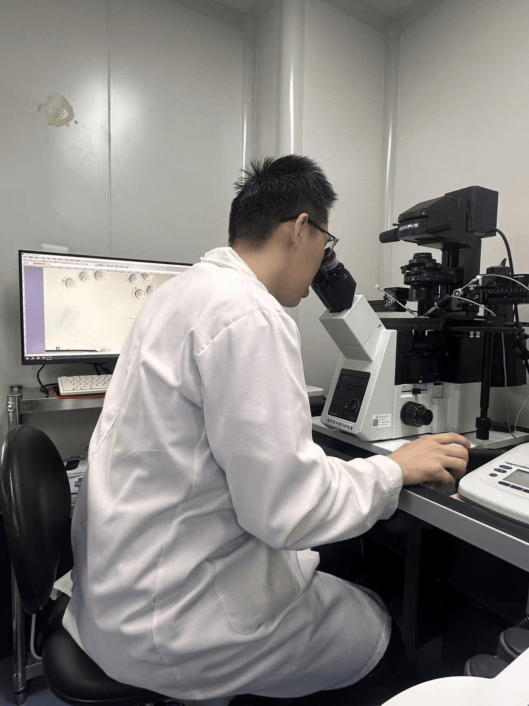

A running record of new collaborations, technical training, programs, and milestones.
Technical Training
Learning precision cell manipulation
I am deeply grateful to Professor Han Zhengbin for his patient guidance in micromanipulation techniques. Under his mentorship, I gained hands-on experience in precision cell manipulation and developed a solid foundation in this cutting-edge field.


Collaboration
Joining the iGEM journey
I am honored to be invited as an advisor by Hu Guohang, a close friend from our studies at Westlake University. I am excited to join this year's iGEM journey and work toward stronger collaboration between HIT and NWAFU at the Grand Jamboree in Paris.
Summer Programs
A summer of quantitative biology
Attended the International Summer School at Westlake University and participated in the Quantitative Biology Summer Training Program at Peking University through the CLS Project.
Honor
National Scholarship
Received the National Scholarship, the highest honor for undergraduate students in China, and was awarded the “Excellent Student” title at Harbin Institute of Technology.